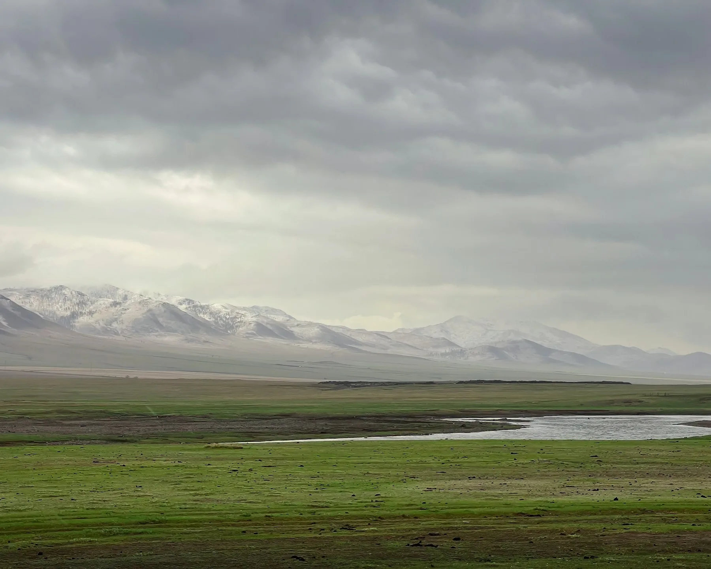
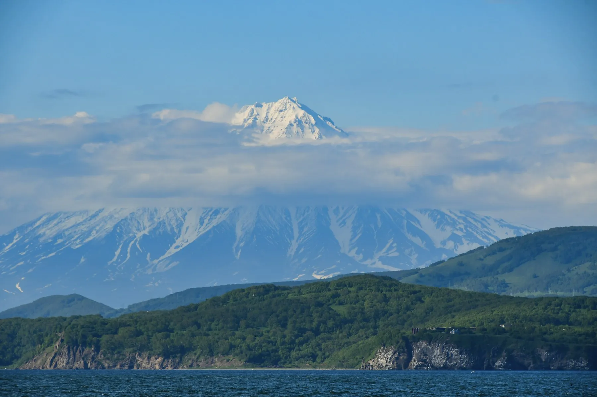
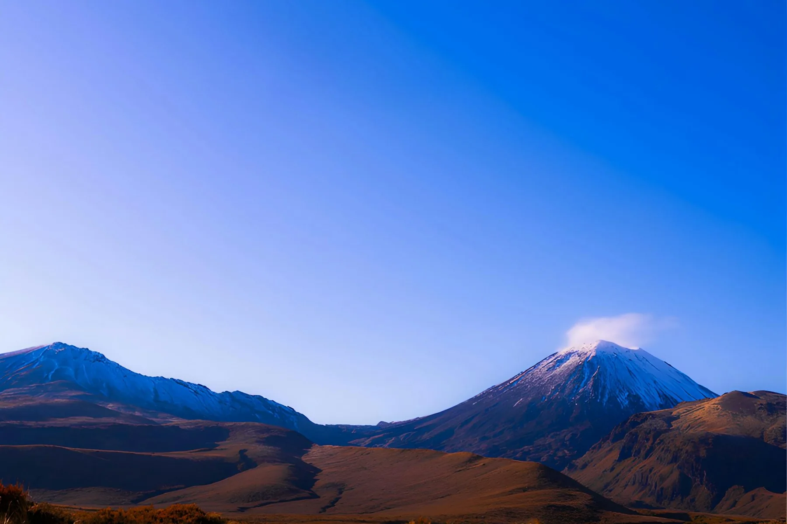
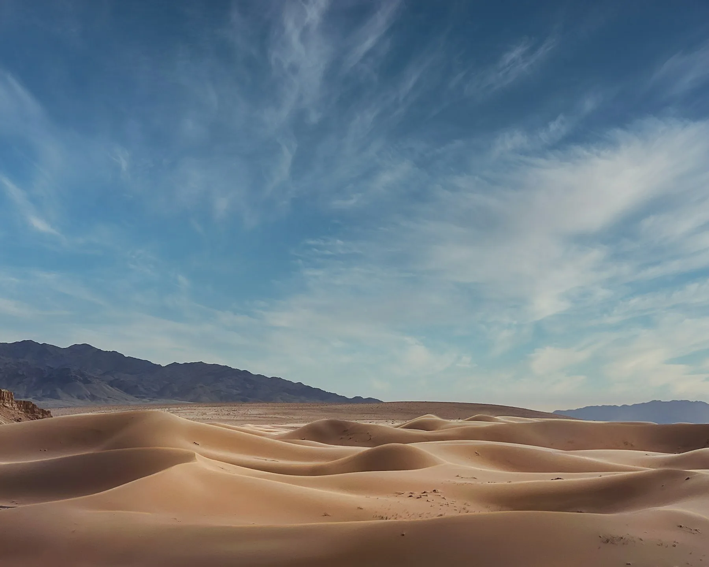
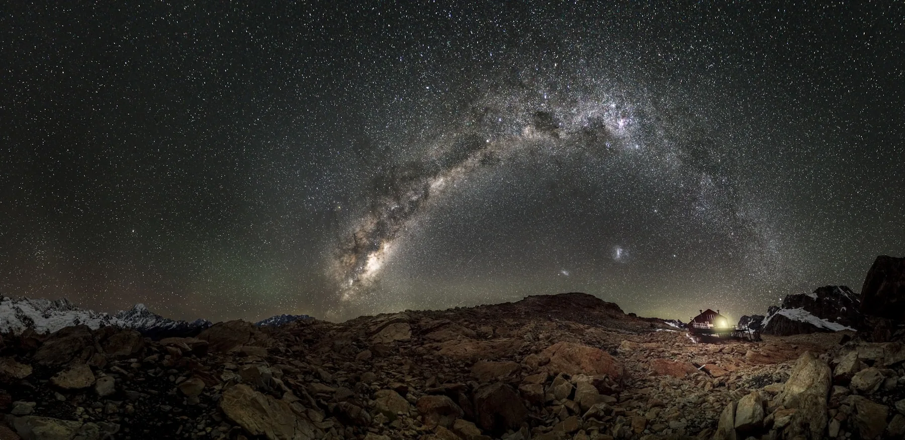

Where to Begin

Orkhon Valley: Waterfalls, Rivers, and Volcanic Landscapes
There are places that are remembered for a single landmark. Orkhon Valley works differently. It is difficult to point to just one location and say, “This alone is worth crossing half the…

Kamchatka Between the Ocean and the Mountains
In southern Kamchatka, it is difficult to draw a clear boundary between the coastline and the mountain regions.

Through a Living Landscape: A Four-Day Journey from Rotorua to Tongariro
After travelling through the heart of New Zealand’s North Island, you begin to realise that Rotorua, Waimangu, Taupō, and Tongariro are not four separate attractions. They are different…

The Gobi Desert: What to See in Mongolia’s Most Unusual Region
On the map, the Gobi appears as a vast pale expanse covering southern Mongolia. It seems as though several days among the sands would quickly begin to feel repetitive. In reality, the…

The Country Where They Give the Night Back to Nature
During the day, you admire the turquoise waters of Lake Tekapo, the snow-covered peaks of the Southern Alps, and the road leading toward Aoraki, New Zealand’s highest mountain. It feels…

Charyn Canyon
Most photographs of Charyn Canyon are taken from the same place.